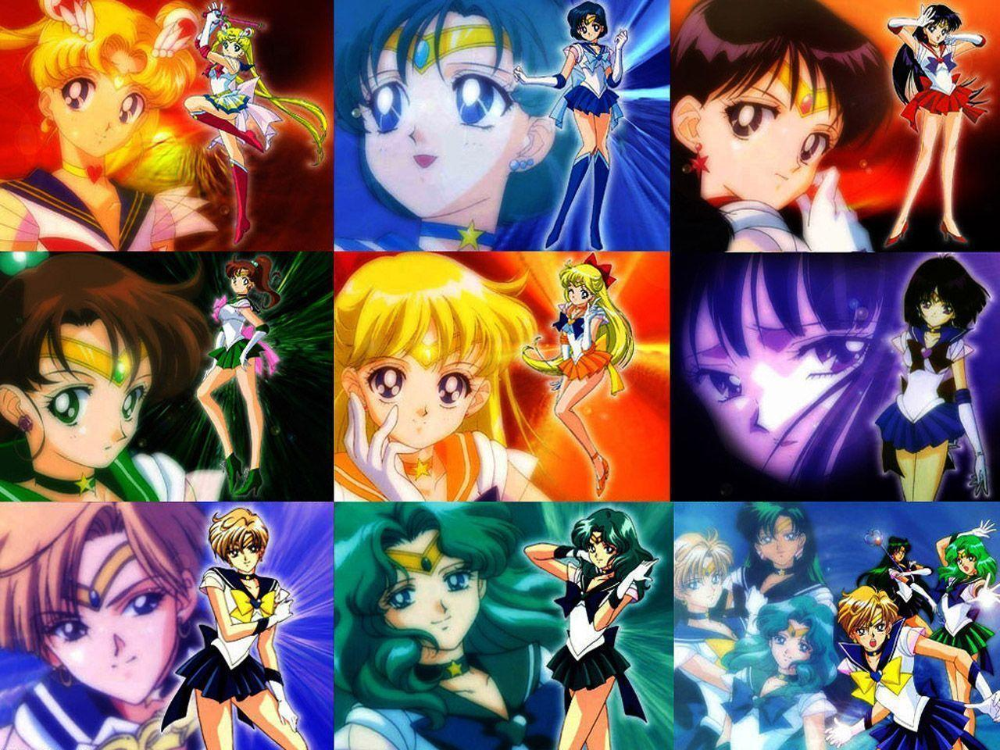

Amazing Article
Helena"Sailor Moon: A Timeless Icon of Empowerment and Magic. Sailor Moon, the beloved anime and manga series created by Naoko Takeuchi, has captured the hearts of millions worldwide for decades. Through the adventures of Usagi Tsukino, a seemingly ordinary schoolgirl who transforms into the powerful Sailor Moon, the story unfolds into a mesmerizing tale of fsriendship, courage, and self-discovery. This captivating heroine, along with her fellow Sailor Guardians, embarks on a quest to protect the world from evil forces, proving that strength comes from within and that true power lies in unity and love. With its enchanting blend of magical girl elements, empowering messages, and timeless charm, Sailor Moon continues to inspire generations, leaving an indelible mark on popular culture and reminding us all that even in the darkest of times, the light of hope and friendship will prevail."
My Sailor Moon
"Sailors of the Silver Millennium: Uniting the Cosmos for Love and Justice. In the enchanting world of Sailor Moon, the Sailor Guardians are not just superheroes, but celestial warriors from the ancient Silver Millennium. Each guardian possesses unique powers, representing planets in our solar system, and are charged with the mission of safeguarding the Earth from darkness. Led by the fearless Sailor Moon, they embody the virtues of love and justice, fighting not only for the safety of our world but also for the bonds of friendship and the triumph of compassion. As they face formidable adversaries and discover their true identities, the Sailors showcase the strength of unity, resilience, and unwavering hope. Their cosmic adventures resonate with audiences young and old, teaching invaluable lessons about courage, self-belief, and the beauty of protecting what truly matters. Sailor Moon's legacy continues to shine brightly, inspiring us to embrace our inner strength and to stand tall against the shadows of adversity, just like these extraordinary sailors."